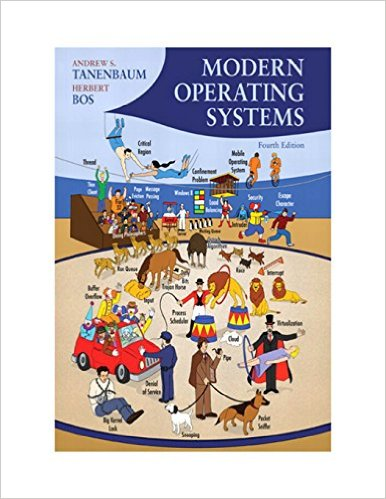

| Objective | ABET Outcomes |
| Describe the historical development of operating systems | j |
| Understand the role of hardware in supporting operating system functions | c, i, j |
| Obtain in-depth understanding of process management and threading | c, i, j |
| Understand and differentiate the different memory management techniques | c, i, j |
| Understand, compare, and contrast the different data storage techniques | c, i, j |
| Construct a program module for an operating system | c, i, j |
| Become proficient system programmers | c, i, j |
| Percentage | Notes | |
| Written assignments | 24% | four written assignments, weighing 6% each |
| Programming projects | 26% | three projects, weighing from 8% to 10% each |
| Midterm exam | 20% | |
| Final exam | 20% | |
| Class Participation: | 10% | Comments/Ask questions |
| Topics | |
| Week 1: 1/19 | - Course overview |
| Week 2: 1/24 and 1/26 | - Syllabus highlights and history of operating systems (1.1-1.2) - Computer hardware review and operating system concepts (1.3-1.5) |
| Week 3: 1/31 and 2/2 | - Shell programming and systems programming (additional materials) - System calls and operating system structure (1.6-1.8) |
| Week 4: 2/7 and 2/9 | - Processes, implementation, and thread model (2.1-2.2, additional materials) - Thread implementation and interprocess communication (2.2-2.3) |
| Week 5: 2/14 and 2/16 | - Semaphores and mutexes (2.3) - Scheduling (2.4) |
| Week 6: 2/21 and 2/23 | - Memory abstraction and virtual memory (3.1-3.3) - Page replacement algorithms (3.4, additional materials) |
| Week 7: 2/28 and 3/2 | - Paging systems and implementation (3.5-3.6) - Segmentation (3.7) |
| Week 8: 3/7 and 3/9 | - Files and directories (4.1-4.2) - File system implementation (4.3, additional materials) - Midterm review and assignments discussions |
| Week 9: 3/14 and 3/16 | Spring Break |
| Week 10: 3/21 and 3/23 | - Midterm exam: class time, in classroom, covering chapter 1, chapter 2, and chapter 3 - File system management and optimization (4.4) |
| Week 11: 3/28 and 3/30 | - Example file systems (4.5) - Principles of I/O hardware and software (5.1-5.2) |
| Week 12: 4/4 and 4/6 | - I/O software layers, disk structure, storage-class memory (5.3-5.4, additional materials) - Disk scheduling, clocks, clock synchronization (5.4-5.5, additional materials) |
| Week 13: 4/11 and 4/13 |
- User interfaces and power management (5.6-5.8) - Security and basics of cryptography (9.1-9.5) |
| Week 14: 4/18 and 4/20 | - Authentication, attacks, and defenses (9.6-9.10) |
| Week 15: 4/25 and 4/27 | - Review and assignments discussions |
| Week 16: 5/2 and 5/4 | - Open discussions |
| Week 17: 5/13 | - Final Exam: 4:30 p.m. to 7:00 p.m., in classroom, covering chapter 4, chapter 5, and chapter 9. |
| Assignments | Date assigned | Date due |
| 1. Chapter 1 and 2 | 2/18 | 2/28 |
| 2. Chapter 3 | 3/4 | 3/13 |
| 3. Chapter 4 | 3/24 | 4/4 |
| 4. Chapter 5 | 4/10 | 4/20 |
| Programming Projects | Date assigned | Date due |
| 1. Shell programming, process and multithreading on Linux | 3/4 | 3/26 |
| 2. Process and multithreading on Linux | 4/1 | 5/1 |
| 3. File system utility on Linux | 4/1 | 5/1 |
|  | Modern Operating Systems by Andrew S. Tanenbaum Edition: 4th ISBN-10: 013359162X ISBN-13: 978-0133591620 Publisher: Prentice Hall |